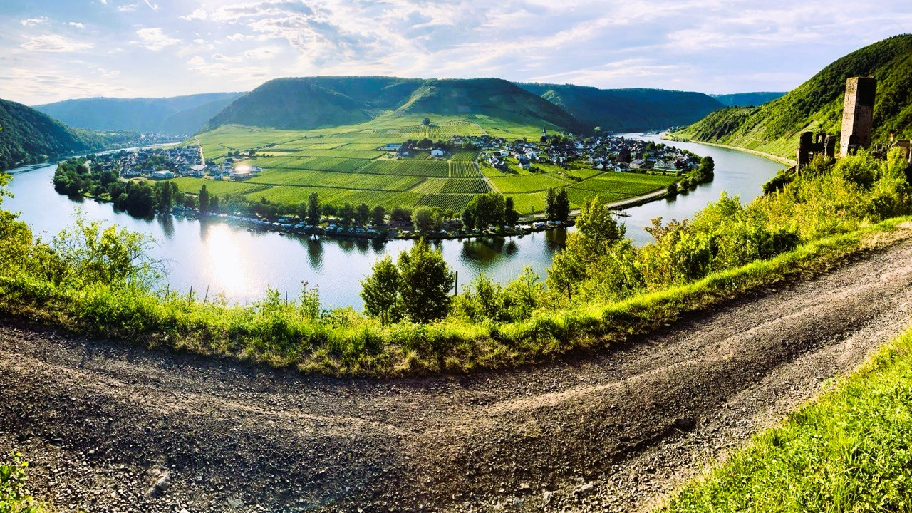
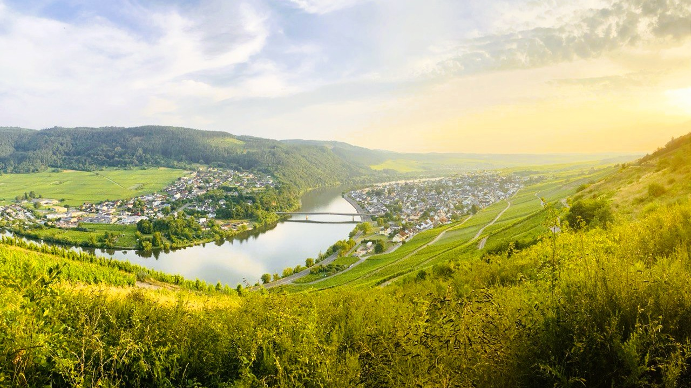

Neue Routen
Trier → Großglockner: 7-Tage-Plan
Siebentägige Route vom Moseltal bis zum Großglockner: rund 150 km pro Tag, jeden Abend ein neuer Ort und Finale auf der Hochalpenstraße.

Highlights der Tour
- Vom Mosel- und Rheintal über den Odenwald und die Schwäbische Alb hinein in die Alpen.
- Jeder Tag endet in einer Stadt mit historischem Zentrum, Zeit für Spaziergänge und Kulinarik.
- Entspanntes Tempo mit genügend Stopps für Fotos, Sightseeing und Pausen.
- Plane zwei Puffertage zusätzlich zu den üblichen 200–230 km Etappen ein.
Tagesplan
- 📍 Tag 1. Trier → Mainz (~150 km) Entlang der Mosel über Bernkastel-Kues und Traben-Trarbach. Übernachtung in Mainz (Dom, Altstadt).
- 📍 Tag 2. Mainz → Heidelberg (~160 km) Rheintal mit Rüdesheim, Loreley und Bingen. Abendstimmung in Heidelberg mit Schloss und Altstadt.
- 📍 Tag 3. Heidelberg → Schwäbisch Hall (~150 km) Durch die Wälder des Odenwalds und sanfte Hügel zur historischen Marktplatzstadt.
- 📍 Tag 4. Schwäbisch Hall → Ulm (~150 km) Kurven der Schwäbischen Alb und Panoramablicke. In Ulm wartet das Ulmer Münster.
- 📍 Tag 5. Ulm → Füssen (~150 km) Annäherung ans Voralpenland, Besuch der Schlösser Neuschwanstein und Hohenschwangau.
- 📍 Tag 6. Füssen → Zell am See (~160 km) Über Österreich: Reutte, Innsbruck, Zillertal. Abends Spaziergang am See.
- 📍 Tag 7. Zell am See → Großglockner (~50–70 km + Hochalpenstraße) Auffahrt über die Großglockner Hochalpenstraße (Maut ca. 30 €). Aussichtspunkte, Gletscher Pasterze. Übernachtung in Heiligenblut oder zurück nach Zell am See.
Fotos & Video
Impressionen von den Schlüsselstellen der Route: Flusstäler, Kurven der Schwäbischen Alb und die Auffahrt zum Großglockner.

Bereit für die Tour?
Schreib uns – wir schicken dir GPX-Tracks, Hotelvorschläge und Tipps für die Großglockner Hochalpenstraße.
Anfrage senden